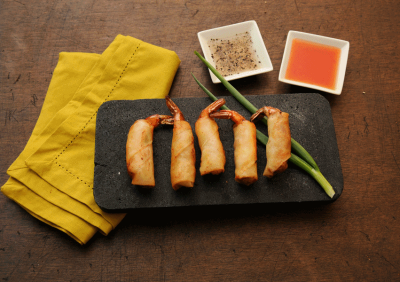

(Filipino: Lutuing Pilipino or Pagkaing Pilipino) consists of the food, preparation methods,
and eating customs found in the Philippines.
The style of cooking and the food associated with it have evolved over many centuries from their
Austronesian origins to a mixed cuisine of Malay-Indonesian, Indian, Japanese, Chinese, Spanish, and American,
in line with the major waves of influence that had enriched the cultures of the archipelago,
as well as others adapted to indigenous ingredients and the local palate.